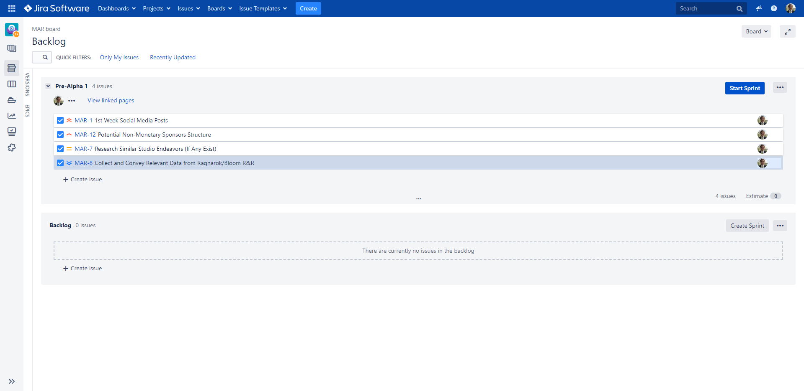

Blog Hours
This page contains my dev-blog information, where I break down my weekly hours, overall highlighting what I accomplished each week.
Continue reading to see how my hours are broken down for the Preproduction Sprint.
Preproduction (January 19 - February 6, 2022)
Week 1: For this week I was admitted officially back to the Studio on January 16th, 2021, and took this week easy.
*Jan. 17th - Monday:
*Jan. 18th - Tuesday:
*Jan. 19th - Wednesday: I introduced myself to the squad!
*Jan. 20th - Thursday:
*Jan. 21st - Friday:
*Jan. 22nd - Saturday:
*Jan. 23rd - Sunday:
Week 2: For this week I prepared my WolverineSoft Studio application. I was admitted on September 12, 2021, and took this week easy.
*Jan. 24th - Monday:
*Jan. 25th - Tuesday:
*Jan. 26th - Wednesday:
*Jan. 27th - Thursday:
*Jan. 28th - Friday: Day 1 of the Global Game Jam 2022! Us 7 WolverineSoft Officers hosted the Global Game Jam 2022 Ann Arbor branch, where we provided a physical location for Game Jammers at the University of Michigan, a Discord place to work on the game jam projects, and things such as a Social Event (at 3pm on Day 2), a Prototype Pizza and Boba Showcase (at 6pm on Day 2), and more. The theme for this year's Global Game Jam was "Duality".
*Jan. 29th - Saturday: Day 2 of the Global Game Jam 2022. I pulled an all-nighter at BBB Room 1690 at the University of Michigan to host the Game Jams physical Ann Arbor branch location from around 11pm - 8am EST. Main work I got done was the Ultimate Design Doc for our game early in the morning so the team could have a cohesive vision and know what tasks to generally accomplish over the Game Jam. I managed our team based upon group progress between art, audio, and programming.
*Jan. 30th - Sunday: Day 3 of the Global Game Jam 2022. I mainly completed Level Design and oversaw a successful submission of our project, which was based upon the game Enter the Gungeon as a Top-Down 2D Shooter with the "Duality" theme emphasized in multiple ways.
Week 3: 7 Total Work Hours
*Feb. 1st - Monday:
*Feb. 2nd - Tuesday:
*Feb. 3rd - Wednesday:
*Feb. 4th - Thursday:
*Feb. 5th - Friday:
*Feb. 6th - Saturday: END OF PRE-PRODUCTION SPRINT!!!
*Feb. 7th - Sunday: BEGINNING OF PROJECT!!!